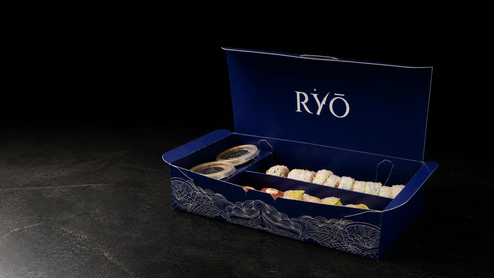
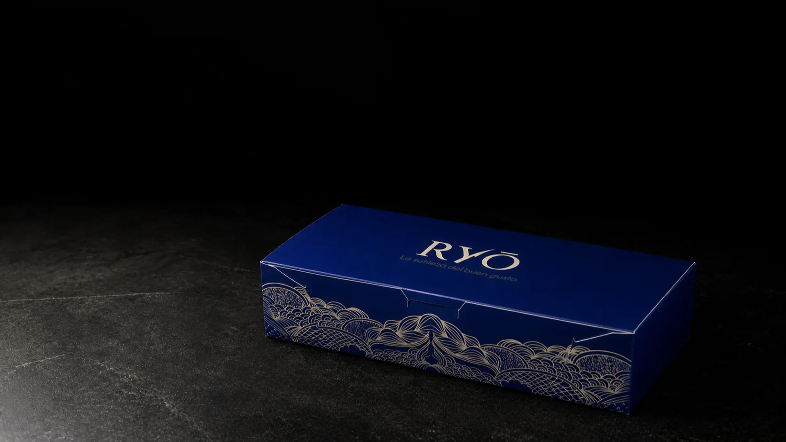

Disfrútalo donde quieras.
01 · La caja
Todo comienza al abrirla.
Una caja azul. Una escena precisa. El producto en el centro.
El wordmark, los divisores y el patrón convierten el packaging en la primera capa de la experiencia RYŌ.


Identidad, presentación y producto en un mismo gesto.
02 · Protagonistas
Cuatro rolls.
Un mismo escenario.
Sei Exclusive, Koga Explosion, Yuzu y Playboy comparten una pose editorial para que cada corte conserve el protagonismo.
03 · Anatomía
El roll domina.
La interfaz explica.
Selecciona un roll y explora cada ingrediente. La línea aparece solo al acercarte; en móvil, la lectura se transforma en una lista clara.
Sei Exclusive
Descripción general
Ingredientes identificados a partir del menú RYŌ. El precio queda reservado para la futura experiencia del menú.
04 · En casa
RYŌ llega a tu mesa.
Alta cocina japonesa para disfrutar en casa. Una experiencia creada para delivery y pick up.
La experiencia RYŌ
Alta cocina japonesa.
Para disfrutar en casa.
Canal directo.
Instagram@ryomcboDescubre más de RYŌ.